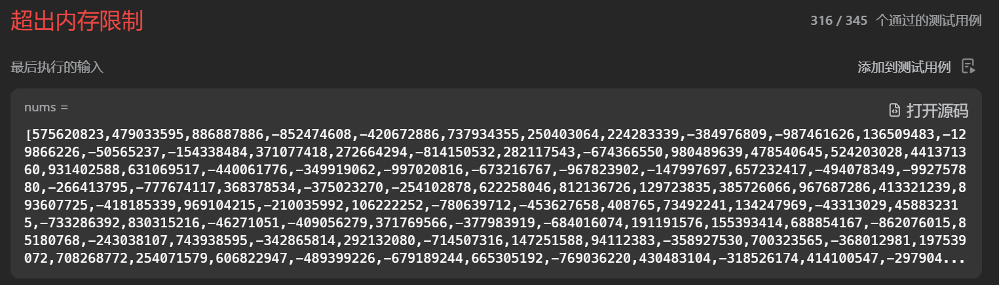

Algorithm Problem 005: Maximum Balanced Subsequence Sum
Problem
Problem Source: 2926. Maximum Balanced Subsequence Sum
This article is an analysis of the solution to the last problem in LeetCode Weekly Contest 370, which I failed to solve. The solution refers to the article by endlesscheng。
Problem Description:
You are given a 0-indexed integer array
nums.A subsequence of
numshaving lengthkand consisting of indicesi0 < i1 < ... < ik-1is balanced if the following holds:
nums[ij] - nums[ij-1] >= ij - ij-1, for everyjin the range[1, k - 1].A subsequence of
numshaving length1is considered balanced.Return an integer denoting the maximum possible sum of elements in a balanced subsequence of
nums.A subsequence of an array is a new non-empty array that is formed from the original array by deleting some (possibly none) of the elements without disturbing the relative positions of the remaining elements.
Example 1:
2
3
4
5
6
7
8
Output: 14
Explanation: In this example, the subsequence [3,5,6] consisting of indices 0, 2, and 3 can be selected.
nums[2] - nums[0] >= 2 - 0.
nums[3] - nums[2] >= 3 - 2.
Hence, it is a balanced subsequence, and its sum is the maximum among the balanced subsequences of nums.
The subsequence consisting of indices 1, 2, and 3 is also valid.
It can be shown that it is not possible to get a balanced subsequence with a sum greater than 14.Example 2:
2
3
4
5
6
Output: 13
Explanation: In this example, the subsequence [5,8] consisting of indices 0 and 3 can be selected.
nums[3] - nums[0] >= 3 - 0.
Hence, it is a balanced subsequence, and its sum is the maximum among the balanced subsequences of nums.
It can be shown that it is not possible to get a balanced subsequence with a sum greater than 13.Example 3:
2
3
4
Output: -1
Explanation: In this example, the subsequence [-1] can be selected.
It is a balanced subsequence, and its sum is the maximum among the balanced subsequences of nums.Constraints:
1 <= nums.length <= 105-109 <= nums[i] <= 109
Approach
DP
Let’s change the formulation of the problem: consecutive elements nums[i] and nums[j] in a balanced subsequence must satisfy $i < j$ and $nums[j] - nums[i] \ge j - i$.
By rearranging the inequality above, we get $nums[j] - j \ge nums[i] - i$.
Let $b[i] = nums[i] - i$, then the requirement for each element in a balanced subsequence only depends on its own value and index, not those of other elements.
Therefore, this problem is similar to the Longest Increasing Subsequence, and we can solve it using DP:
DP Definition: dp[j] represents the maximum sum of elements in a balanced subsequence ending at nums[j].
Recurrence relation: $dp[j] = nums[j] + \max\set{dp[i] | (i < j) ∧ (b[j] \ge b[i])}$
Code：
1 | import java.util.Arrays; |
Clearly, the time complexity of the above code is $O(n^2)$ due to the nested loops, and it is likely to time out. How can we improve?
Binary Indexed Tree (BIT)
Based on the recurrence relation above, our code logic should be as follows:
- For each $j$,
- Traverse the interval $[0, j)$ and find the index $i$ that satisfies $b[j] \ge b[i]$ and maximizes $dp[i]$, which is a range query for the maximum value.
- Set $dp[j] = nums[j] + dp[i]$, which is a point update.
We need the time complexity of “range query” + “point update” to be strictly less than $O(n)$ to avoid time-outs. The Binary Indexed Tree (BIT) fits this requirement.
Initially, I thought BIT was only suitable for range sum queries (for optimizing difference arrays), but this problem shows that range queries can also extend to minimum and maximum values.
The values stored in the BIT are key-value pairs <b[j], dp[j]>, where b[j] is the index and dp[j] is the array element. To query the maximum value of elements whose indices $\le b[j]$, we are essentially querying the maximum value of a prefix interval.
Code:
1 | import java.util.Arrays; |
Submit this code:

We got an OOM.
Note the data range of the problem: $n \le 10^5$ ，$nums[i] \in[-10^9,10^9]$
Therefore, the range of values for b[i] is approximately equal to the range of 32-bit integers, i.e., $2^{32}$, which will result in an Out Of Memory (OOM) error when creating BIT#arr. How can we optimize the space?
Discretization
Reference to OI-wiki:
Discretization is a data processing technique, essentially a form of hashing, that ensures that data remains in its original full/partial order after hashing.
In simple terms, when some data is too large or of a type that does not support using it as an array index conveniently, and only the relative size relationship between elements affects the final result, we can process the problem by treating the data based on their ranking, i.e., discretization.
Let’s combine the concept with the problem:
- We want to query the maximum value of all indices $\le b[j]$ —— there are $2^{32}$ possible values for
b[j]. - However, the array
bonly hasnelements. - Assume that
b[j]is the $k$-th smallest element after sorting; then, we only need to query the maximum value among the first $k - 1$ elements smaller thanb[j]. - Therefore, the length of
BIT#arris alson, and $n \ll 2^{32}$. - If we know the index
kwhereb[j]is located after sorting, the operation ‘query the maximum value of all indices less than or equal tob[j]’ is equivalent togetMax(k).
In terms of effects, ‘Discretization’ should probably be called ‘Normalization’? 🤔
The process of discretization is a typical template. Just memorize it:
- Create a copy of the original array.
- Sort the values in the copy in ascending order.
- Remove duplicates from the sorted copy.
- Find the position of each element in the original array in the sorted copy. This position becomes the ranking, and it is used as the discretized value.
1 | /** |
If not removing duplicates, we use std::lower_bound instead of std::binary_search in C++. However, Java does not have such a function, so we must remove duplicates.
Code
1 | import java.util.Arrays; |